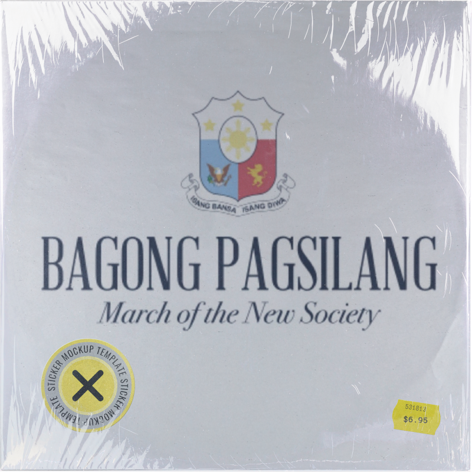
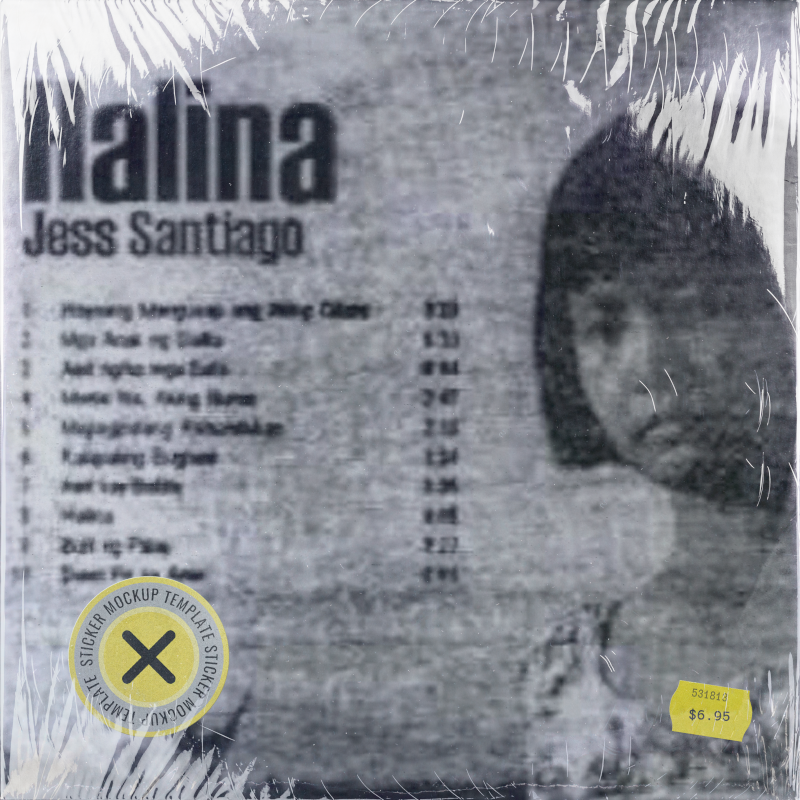

Historical distortion
“Perception is real, truth is not” Imelda Marcos
A historical distortion is when false information is used to change historical narratives, often to support a political agenda. It is not the same as historical revisionism, which describes any change to existing historical narratives. Revisionism can happen validly when new information and evidence come to light, prompting an update to existing historical knowledge. Distortion, on the other hand, intentionally obscures the truth of history with shades of falsehood to deceive and manipulate people in the present day.
Example
The idea of “Bagong Lipunan” (New Society) as a new era of progress and prosperity.
The claim promotes the idea that the Philippines was experiencing a rebirth under Marcos. Its lyrics described a new nation moving toward progress.
Song: Bagong Pagsilang (also known as Bagong Lipunan or Martsa ng Bagong Lipunan)

Lyrics: Levi Celerio
Music: Felipe Padilla de Leon
Commissioned by Ferdinand Marcos for the “Kilusang Bagong Lipunan” upon the declaration of martial law in 1972, the song was played daily on all television and radio stations. The song declares the arrival of a new era of hope, progress and a prosperous future.
Song: Masagana-99 Theme Song

Lyrics: Gene Generoso and Emil Mijares
Sung by: The Entrolezos
The song was a commissioned jingle promoting the agricultural program Masagana 99 by Ferdinand Marcos Sr in 1973. The program aimed to increase rice production by adopting modern farming methods. The goal was to achieve an increase in the crop yield from the lowly 40 cavans per hectare to 99 cavans per hectare.
Claims & counterevidence
| Claims | Counterevidence |
|---|---|
| The country was entering a new era of progress and prosperity. |
Indeed, the country experienced economic development during parts of the 1970s. However, it was short-lived due to the accumulation of foreign debt, resulting in a severe economic crisis in the 1980s. The economic state of the Philippines was worse after martial law than before. The World Bank reports that the economy contracted by 7.3% year-on-year in both 1984 and 1985. The song’s optimistic message therefore was not met realistically. Source: World Bank Report, 2018 |
| The Bagong Lipunan was a positive transformation for the Filipino people. |
The Philippines experienced a severe economic crisis in 1984–1985, when the economy contracted sharply. The positive message of the song concealed the country’s mounting economic problems. Source: Saban, 2017 |
| The New Society represented national unity and collective renewal. |
The government’s image of unity excluded or silenced many critics. Following the declaration of Martial Law, privately owned media organizations were shut down or seized, and restrictions were placed on assemblies, strikes, and political expression. A society in which dissent was suppressed cannot be portrayed as fully united through free public agreement. Source: Amnesty International, 2018 |
| Bagong Lipunan is an era of peace. |
The government formally recognizes victims of summary execution, torture, enforced disappearance, and other gross human rights violations committed under the Marcos regime from September 21, 1972, to February 25, 1986. Source: Republic Act No. 10368 — Human Rights Victims Reparation and Recognition Act of 2013 |
| The Masagana 99 program will deliver prosperity and food security. |
Although the program had initial successes, it was very short-lived. The program promoted the use of the “Miracle Rice” variety, low-cost fertilizers, and herbicides. The program also featured a supervised credit scheme for farmers. The country attained self-sufficiency in 1975-1976, but the success was short-lived. The costly subsidies and the low loan repayment performance led to the insolvency of an estimated 800 rural banks. The problematic credit scheme rendered the loans accessible only to rich landowners. Moreover, the technological interventions of the program had a significant environmental impact, affecting public health, agriculture and the economy. Source: “Remembering Masagana 99 and lessons learned” |
Why music?
Considering the popularity of the karaoke, singing contests and musical variety shows, one can deduce that Filipinos are music lovers. Historically, Philippine musical genres are diverse: from kundiman to political songs and chants, and the inclusion of foreign songs. With centuries of colonial struggles, Filipinos have used words and music as a potent object that ignites movements, resistance, and political education. And with this potency, one can easily recognize that songs can also be used to drive historical distortions and popularize unsubstantiated claims to manipulate the masses. During the Martial Law era, this was exactly the case for some of the state-sponsored anthems:
“According to Concepcion (2014), Marcos deftly used music as a vital component of the state’s cultural apparatus consequently accomplishing two things: maintain his despotic grip of the country and conceal his ambition for unbridled and perpetual rule.” Sarabia-Panol & Maxino-Baseleres, 2017
The potency of music as a tool for social change was also utilized to dismantle the Marcosian “New Society” narrative of the Marcos regime. The EDSA People Power Revolution, which was the culmination of the anti-Marcos movement, was filled with music, most of which were deemed instrumental to the political awakening of the public. These songs, such as Oy Utol, Buto’t Balat Ka Na’y Natutulog Ka Pa, Saranggola ni Pepe, Halina and Martsa ng Bayan, were used collectively and individually to contemporize, mobilize, and remind the nation of its fighting spirit and resolve against oppressors.
Songs opposing the Marcosian “New Society” narrative
Song: Oy Utol, Buto’t Balat Ka Na’y Natutulog Ka Pa

By: Heber Bartolome and Banyuhay
The song criticizes the silence and passivity of the public in the face of suffering, hunger, fear, and restrictions on freedom resulting from the oppressive martial law.
The song provides a graphic description of hunger, silence, and fear exhibited by the public during the Martial Law and the New Society movement, which promised the opposite. Certain elements in the lyrics: “...hungkag [na] tiyan, … bibig [na] may tapal, … takot sa kalaban”, speak about the actual outcome. These outcomes were exacerbated by the apparent passivity and complacency of the masses.
Source: Activism in the Philippines: Memorializing and Retelling Political Struggles through Music
Song: Saranggola ni Pepe

By: Celeste Legaspi
Underneath the seemingly cheery melody with subtleties of innocence and childlike emotions, the song subtly hints at the presence of anxieties about the political atmosphere. However, this is simply the product of the censorship brought by the Martial Law. Despite the threats of censorship and murder, the song made allusions to the oppression, particularly the silencing of the press and dissent: “pinilit umawit…” and “hinuli ang ibon”.
Source: ML@50 & Pop Culture: Saranggola ni Pepe
Song: Halina

By: Jess Santiago
The song has lyrics that question whether the state’s promise of order and security were applied equally to workers, farmers, and poor communities.
Song: Martsa ng Bayan

By: Jess Santiago
The song calls for collective action against dictatorship directly contradicting the idea that Filipinos uniformly accepted Marcos’ rule.
Other sources
- Proclamation No. 1081, Sept. 21, 1972 - Gvt Stated justification for Martial law declaration
- Martial Law Museum - Declaration of Martial Law
https://learn.martiallawmuseum.ph/magaral/declaration-of-martial-law/ - Filipinas Heritage Library
https://www.filipinaslibrary.org.ph/himig/martial-law-and-music/ - Philippine Center for Investigative Journalism
https://old.pcij.org/stories/songs-in-the-key-of-politics/